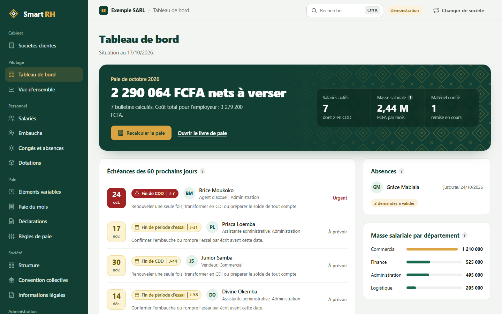
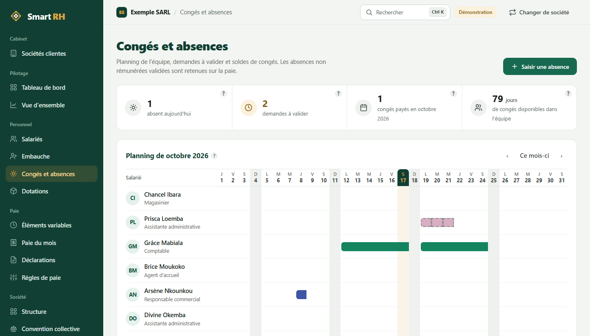
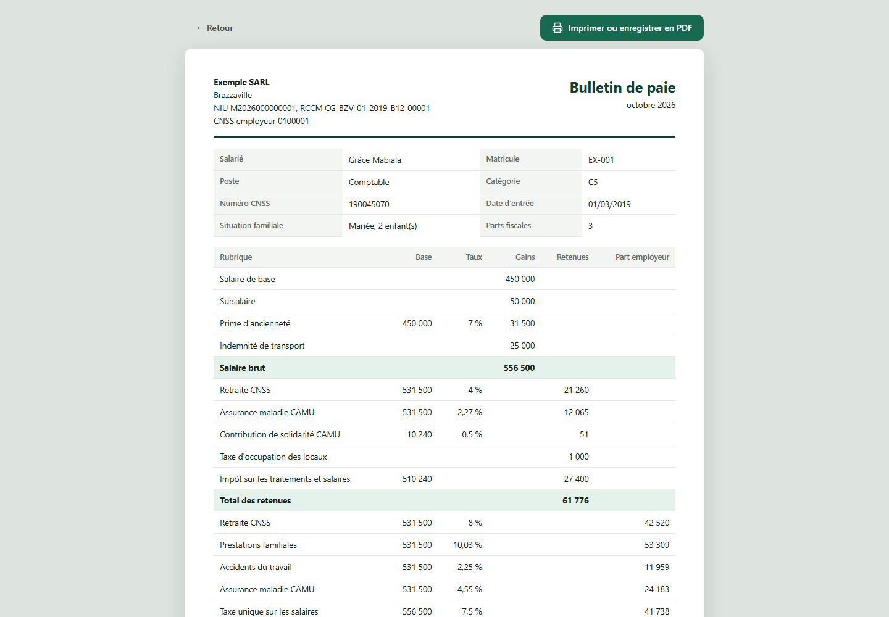

des PME congolaises,
enfin simples.
Business plan, variante « abonnement annuel » : maintenance et formation comprises, serveur facturé au client, sans charges de personnel.
Document investisseurs · Octobre 2026Confidentiel
Smart RH est un logiciel de gestion des ressources humaines et de la paie, entièrement paramétrable, pensé pour le droit du travail et les réalités des PME du Congo-Brazzaville. La version 1.0 est construite et prête à être installée. Dans cette variante, sans charges de personnel et avec un abonnement annuel payé d'avance, nous recherchons 25 millions de FCFA pour la commercialiser ; l'activité devient bénéficiaire dès la deuxième année.
La paie congolaise est complexe et vient de changer (nouvel impôt sur les salaires en 2026, SMIG relevé en 2025). Les PME la font sur Excel, avec des erreurs et des risques de redressement.
Un logiciel où chaque règle (taux, plafond, barème, convention collective) se paramètre à l'écran avec une date d'effet. Un changement de loi se règle sans développeur. La version 1.0 fonctionne déjà.
Environ 6 400 entreprises formelles au Congo et 5 827 créations en 2025. Les cabinets comptables, qui gèrent la paie de plusieurs clients, sont notre premier canal.
Abonnement annuel par société (180 000 à 780 000 FCFA selon l'effectif), payé d'avance, maintenance et formation comprises. Le serveur d'installation est facturé au client en plus de l'abonnement.
Produire un bulletin de paie conforme au Congo demande de maîtriser un empilement de règles qui bougent, et la plupart des PME n'ont ni l'outil ni le spécialiste pour le faire.
Retraite, prestations familiales, accidents du travail, assurance maladie, taxe unique sur les salaires, impôt sur les salaires : chacune a son taux, son assiette et son plafond.
SMIG passé de 50 400 à 70 400 FCFA en 2025. IRPP remplacé par l'ITS dans la loi de finances 2026. Nouveau Code du travail en préparation.
Excel ne trace rien et ne s'adapte pas seul. Les logiciels importés sont chers, pensés pour d'autres pays et dépendants d'une connexion stable.
| Prélèvement | Part salarié | Part employeur | Plafond mensuel |
|---|---|---|---|
| Retraite (CNSS) | 4 % | 8 % | 1 200 000 FCFA |
| Prestations familiales (CNSS) | — | 10,03 % | 600 000 FCFA |
| Accidents du travail (CNSS) | — | 2,25 % | 600 000 FCFA |
| Assurance maladie (CAMU) | 2,27 % | 4,55 % | 600 000 FCFA |
| Taxe unique sur les salaires | — | 7,5 % | sans plafond |
| Taxe d'occupation des locaux (TOL) | 1 000 FCFA | — | montant fixe |
| Impôt sur les salaires (ITS) | barème à 5 tranches | — | — |
Taux indicatifs issus du barème CLEISS 2023 et de publications professionnelles 2026 ; à valider par l'expert-comptable du projet.
Smart RH couvre tout le cycle de vie du salarié, de l'embauche à la sortie, pour une ou plusieurs sociétés. Sa différence : aucune règle n'est écrite en dur dans le logiciel.
Chaque taux, plafond ou barème a une date d'effet. On ajoute une nouvelle version, on n'écrase jamais : les anciens bulletins restent recalculables à l'identique.
Un modèle « Congo » prérempli, puis la convention collective (catégories, grilles, primes), puis les particularités de chaque société.
Un cabinet gère tous ses clients dans une seule installation, chacun cloisonné. Une PME autonome utilise la même application pour elle seule.
Le logiciel tourne en local chez le client, sur un poste ou un petit serveur du réseau. La synchronisation en ligne entre sites est prévue en version 2.
| Module | Ce qu'il fait |
|---|---|
| Sociétés et structure | Établissements, départements, postes, catégories professionnelles. |
| Dossier salarié | État civil, famille, contrat, numéro CNSS, pièces jointes, historique complet. |
| Contrats et cycle de vie | Embauche, essai, renouvellement, avenant, promotion, sanction, sortie, avec alertes d'échéance. |
| Temps et absences | Congés, soldes, absences, heures supplémentaires. |
| Paie | Rubriques configurables, bulletin, livre de paie, états pour la CNSS et les impôts. |
| Dotations matérielles | Catalogue, attribution, fiche de remise signée, restitution à la sortie. |
| Documents | Contrat, attestation, certificat de travail, solde de tout compte, générés depuis des modèles. |
| Droits et traçabilité | Rôles par société et journal de toutes les modifications. |
Smart RH n'est plus un projet sur le papier. La version 1.0 tourne, avec des données de démonstration, et s'installe chez un client en suivant un guide pas à pas.



| Domaine | Fonctions disponibles |
|---|---|
| Paie | Calcul ITS 2026, CNSS, CAMU, TUS, TOL ; heures supplémentaires et primes ; absences non payées ; bulletins et livre de paie. |
| Règles | Taux, plafonds et barèmes datés ; cinq conventions collectives (Commerce, BTP, Banques, Hôtellerie, Industrie) avec préavis, essai, ancienneté, indemnités. |
| Salariés | Embauche guidée, fiche complète, avenants tracés, alertes de fin d'essai et de CDD, dotations de matériel. |
| Congés | Planning d'équipe, demandes et validation, soldes de 26 jours ouvrables plus l'ancienneté, jours fériés congolais. |
| Sorties | Solde de tout compte calculé, certificat de travail et reçu imprimables. |
| Déclarations | Bordereau CNSS, état ITS et taxes pour la DGI, déclaration annuelle des salaires, export Excel. |
| Exploitation | Plusieurs sociétés par installation, comptes et rôles, journal des modifications, sauvegardes quotidiennes, tests automatiques, guide d'installation. |
Smart RH est le premier de trois logiciels partageant la même base clients : la facturation (devis, factures, relances, encaissements) puis le CRM (prospects, suivi commercial). Chaque client RH devient un client potentiel des deux suivants, sans coût d'acquisition supplémentaire.
Le Congo compte peu d'entreprises formelles, mais elles ont toutes l'obligation de produire une paie conforme, et le rythme des créations s'accélère.
| Cible | Pourquoi | Comment on l'atteint |
|---|---|---|
| Cabinets comptables et de gestion | Ils gèrent déjà la paie de plusieurs PME : un cabinet convaincu apporte plusieurs sociétés d'un coup. | Démarchage direct, offre dédiée |
| PME de 10 à 100 salariés | Assez de salariés pour que la paie soit lourde, pas assez pour un service RH équipé. | Prescription par les cabinets, démonstrations |
| Jeunes entreprises formelles | Elles doivent se mettre en règle dès la première embauche. | Partenariats, contenus pratiques en ligne |
Brazzaville et Pointe-Noire concentrent environ deux tiers des petites entreprises recensées. Le déploiement commercial commence par ces deux villes.
Les six pays de la zone CEMAC partagent la monnaie, le cadre comptable OHADA et des régimes sociaux de même structure. Parce que les règles sont paramétrables, ouvrir un pays revient à créer un nouveau modèle de règles, pas à réécrire le logiciel. Cette extension n'est pas comptée dans les prévisions de ce plan.
| Alternative | Forces | Limites pour une PME congolaise |
|---|---|---|
| Excel et calcul manuel | Gratuit, connu de tous. | Erreurs, aucune traçabilité, mise à jour manuelle à chaque changement de loi. |
| Logiciels internationaux (Sage et équivalents) | Complets, réputés. | Prix élevés, paramétrage local à faire par un intégrateur, pensés pour d'autres législations. |
| Congo Paie (en ligne, lancé en avril 2026) | Règles ITS 2026 intégrées ; prix bas (12 500 à 65 000 FCFA par mois selon l'effectif) ; formation gratuite qui attire les comptables. | Uniquement en ligne ; selon son propre comparatif, pas de plusieurs sociétés dans un même compte ni de tableau de bord pour cabinet ; fonctions RH réservées à l'offre supérieure. |
| Externalisation à un cabinet | Aucune compétence interne requise. | Coût récurrent, peu de visibilité ; ces cabinets sont eux-mêmes nos clients potentiels. |
Une loi change : on ajoute une ligne datée dans un écran. Pas de mise à jour à attendre de l'éditeur.
Installé chez le client, le logiciel fonctionne pendant les coupures d'internet, là où un outil en ligne s'arrête.
Préavis, essai, prime d'ancienneté et indemnités suivent la convention de chaque société : c'est ce que les outils concurrents laissent à la main.
Gestion de plusieurs sociétés clientes dans une seule installation, avec cloisonnement des données.
Chaque société paie un abonnement annuel, facturé d'avance à la signature puis à chaque date anniversaire. Il comprend le logiciel, ses mises à jour, l'entretien et la formation. Le serveur d'installation est facturé à part. Payé d'avance, l'abonnement apporte l'année entière en trésorerie dès la signature.
| Offre annuelle | Effectif et contenu | Prix par an |
|---|---|---|
| Essentiel | Jusqu'à 15 salariés : paie complète, bulletins, congés, déclarations. | 180 000 FCFA |
| Pro | Jusqu'à 50 salariés : Essentiel + conventions collectives, éléments variables, sorties, dotations, analyses. | 420 000 FCFA |
| Entreprise | Jusqu'à 100 salariés, au-delà sur devis ; plusieurs utilisateurs, assistance prioritaire. | 780 000 FCFA |
| Cabinet | Toutes les sociétés clientes dans une seule installation, tarif dégressif selon le nombre de dossiers. | dès 150 000 FCFA par société |
Nouveaux barèmes et taux légaux (loi de finances, SMIG, conventions) et nouvelles versions du logiciel.
Installation, vérification des sauvegardes, maintenance à distance et assistance par téléphone ou messagerie.
Formation des utilisateurs à l'installation, puis une session de remise à niveau chaque année.
Smart RH seul : panier moyen proche de l'offre Pro.
Arrivée du module de facturation chez une partie des clients.
Facturation généralisée et premiers clients CRM.
Dix cabinets pilotes à Brazzaville et Pointe-Noire, accompagnés de près. Chacun apporte plusieurs sociétés.
Démonstration sur les données réelles du prospect : son bulletin calculé en quelques minutes.
Guides pratiques sur la paie congolaise et les changements de loi, pour être trouvé par les dirigeants.
| Indicateur | Fin année 1 | Fin année 2 | Fin année 3 |
|---|---|---|---|
| Sociétés clientes actives | 40 | 150 | 400 |
| Part du marché formel estimé | 0,6 % | 2,3 % | 6,3 % |
| Villes couvertes | 2 | 2 | 4 |
Cette partie est à compléter par le porteur du projet : les investisseurs y cherchent d'abord qui exécute.
Le porteur du projet assure seul la vente, l'installation, la formation et l'assistance ; les rôles de l'expert-comptable et du conseil juridique sont des prestations ponctuelles. Aucun salaire n'est compté, pas même celui du porteur.
Sans salaires à payer, l'activité perd peu d'argent la première année et devient bénéficiaire dès la deuxième.
En millions de FCFA Chiffre d'affaires Charges
| En millions de FCFA | Année 1 | Année 2 | Année 3 |
|---|---|---|---|
| Abonnements annuels (chiffre d'affaires) | 6,3 | 53,8 | 205,5 |
| Bureau, énergie, hébergement | 8,0 | 12,0 | 20,0 |
| Marketing et déplacements commerciaux | 6,0 | 10,0 | 18,0 |
| Formation et entretien chez les clients (déplacements, supports) | 2,0 | 6,0 | 14,0 |
| Conseil juridique et comptable | 4,0 | 4,0 | 6,0 |
| Divers | 4,0 | 4,0 | 6,0 |
| Charges (aucune charge de personnel) | 24,0 | 36,0 | 64,0 |
| Résultat avant impôt | −17,7 | +17,8 | +141,5 |
| Résultat cumulé | −17,7 | +0,1 | +141,6 |
Prévisions hors impôt sur les sociétés, hors rémunération du porteur et hors serveurs refacturés aux clients. Détail des hypothèses au chapitre 13.
Le point bas de trésorerie cumulé est de 17,7 millions de FCFA à la fin de l'année 1. Nous recherchons 25 millions, soit ce besoin plus une marge de sécurité pour un démarrage commercial plus lent que prévu.
| Usage des fonds | Part | Montant (M FCFA) |
|---|---|---|
| Commercial et marketing (cabinets pilotes, démonstrations, déplacements, contenus) | 35 % | 8,75 |
| Produit (hébergement, outils, travaux techniques sous-traités ponctuellement) | 25 % | 6,25 |
| Exploitation (bureau, énergie, connexion) | 20 % | 5,0 |
| Conformité (expert-comptable, juriste, veille légale) | 15 % | 3,75 |
| Réserve | 5 % | 1,25 |
| Total | 100 % | 25,0 |
| Risque | Réponse prévue |
|---|---|
| Règles légales instables ou mal documentées | C'est le cœur du produit : règles datées et paramétrables, validées par un expert-comptable local, veille légale financée. |
| Un concurrent local déjà installé (Congo Paie) | Prix alignés ; avantage sur les cabinets (plusieurs sociétés), les conventions collectives et le fonctionnement sans internet ; formation gratuite à proposer nous aussi. |
| Marché formel étroit | Revenu par client augmenté par la facturation et le CRM ; extension possible à la zone CEMAC. |
| Faible habitude de payer un logiciel | Prix mensuel bas, démonstration sur les données du prospect, prescription par les cabinets. |
| Connexion et électricité instables | Fonctionnement en local, synchronisation différée. |
| Retards de paiement des clients | Paiement par mobile money, facturation d'avance, mise en service payée à la commande. |
| Erreur de calcul engageant notre responsabilité | Jeux de tests sur des bulletins réels, journal des modifications, mention claire de la responsabilité du paramétrage. |
| Une seule personne pour tout faire | Logiciel déjà construit et testé, guide d'installation, assistance à distance ; recrutements financés sur les bénéfices dès l'année 2, avant d'atteindre une centaine de clients. |
| Coût du serveur freinant la vente | Installation possible sur un poste existant ; matériel proposé à prix coûtant, facturé séparément. |